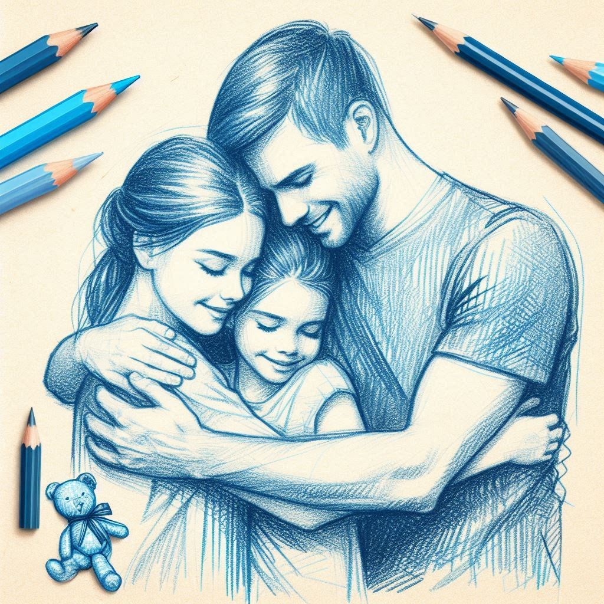

사실은 사랑받고 싶었어
진심을 전하는, 그 어려운 일을 가능하게 하는 연결의 대화
작가 :
박재연출판일 :
2021.03.05감상평 :
박재연 작가의 "사실은 사랑받고 싶었어"는 진심을 토대로 상대방에게 솔직하게 표현하는 방법을 가르쳐주는 자기계발서이다. 가족들과 사소한 말 한마디로 큰 싸움이 벌어지는 일이 잦아지면서, 내 마음을 잘 표현하는 법을 찾고자 이 책을 읽게 되었다. 대화에서 중요한 것이 화법 스킬이 아니라 자신과 상대방의 마음을 잘 파악하여 진심이 통하는 것이라는 책 속의 말이 마음에 와 닿았다. 대화 중 문제가 생겼을 때, 그 원인이 상대에게 있는 것이 아니라 내가 스스로의 욕구와 감정을 잘 파악하지 못했기 때문에 화가 난 것이라는 점을 깨달았다. 또한, 상대방의 과격한 행동이나 날선 말투에 집중하기보다는, 그 말 속에 담긴 저의와 욕구를 살피며 듣는 것이 더 중요하다는 것을 배웠다. 이 책에서 배운 내용들을 여러 번 스스로 되새기며, 진심이 통하는 좋은 대화를 할 수 있는 사람이 되고 싶다.감상평에 대한 AI 그림:
- 
감상평에 대한 AI감정평가:
1. 공감과 내면적 성찰: 독자가 자신의 감정과 욕구를 파악하지 못했기 때문에 화가 난 것이라는 점을 깨달은 부분에서 공감의 감정이 드러납니다. 자신과 상대방의 마음을 잘 이해하려는 노력은 진정한 소통의 본질을 보여줍니다.
2. 자기 개선과 성장: 독자가 진심이 통하는 좋은 대화를 할 수 있는 사람이 되고 싶다는 다짐에서 자기 개선과 성장에 대한 강한 열망이 느껴집니다. 이 책을 통해 독자는 더 나은 자신이 되기 위한 길을 모색하고 있습니다.
3. 인내와 이해: 상대방의 과격한 행동이나 날선 말투에 집중하기보다는 그 속에 담긴 저의와 욕구를 살피며 듣는 것이 중요하다는 점을 배운 부분에서 인내와 이해의 감정이 드러납니다. 이는 깊은 인간관계를 형성하고자 하는 의지를 반영합니다.